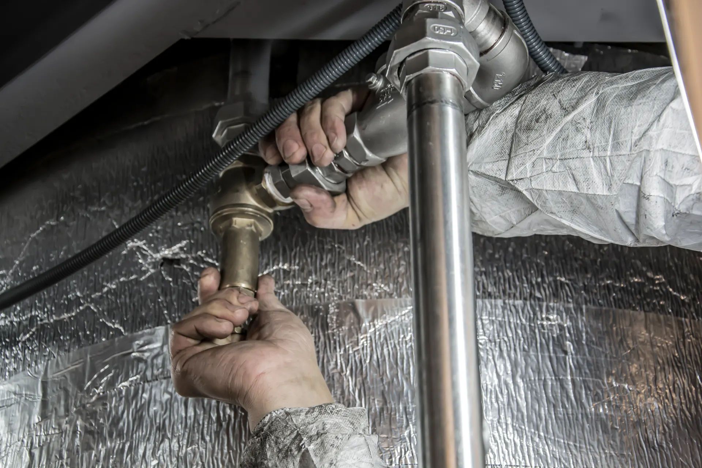
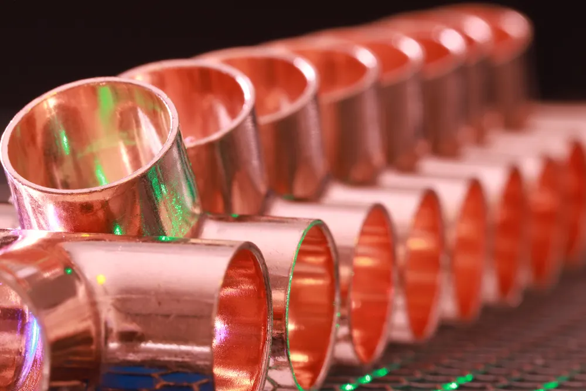

OLVERA · CÁDIZ
Tu trabajo de
fontanería.
Fontanería Londro. Llámanos para consultar el trabajo que necesitas.
Llamar al 669 804 635Conoce nuestra actividad
SERVICIOS
Fontanería,
con contacto directo.
Fontanería en general
Cuéntanos qué necesitas y consulta directamente si podemos realizar tu trabajo.
Consultar por teléfono
SOBRE FONTANERÍA LONDRO
Un negocio de fontanería en Olvera.
Fontanería Londro se dedica a la fontanería. Para hablar de tu caso, conocer la disponibilidad o consultar si nos desplazamos a tu localidad, llámanos.
Una llamada para explicar lo que necesitas y resolver tus dudas.
CONTACTO
Hablemos de lo
que necesitas.
Fontanería Londro · Olvera (Cádiz)
Consulta por teléfono la disponibilidad y los desplazamientos.